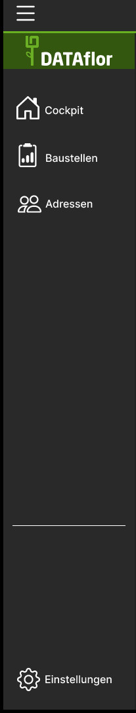
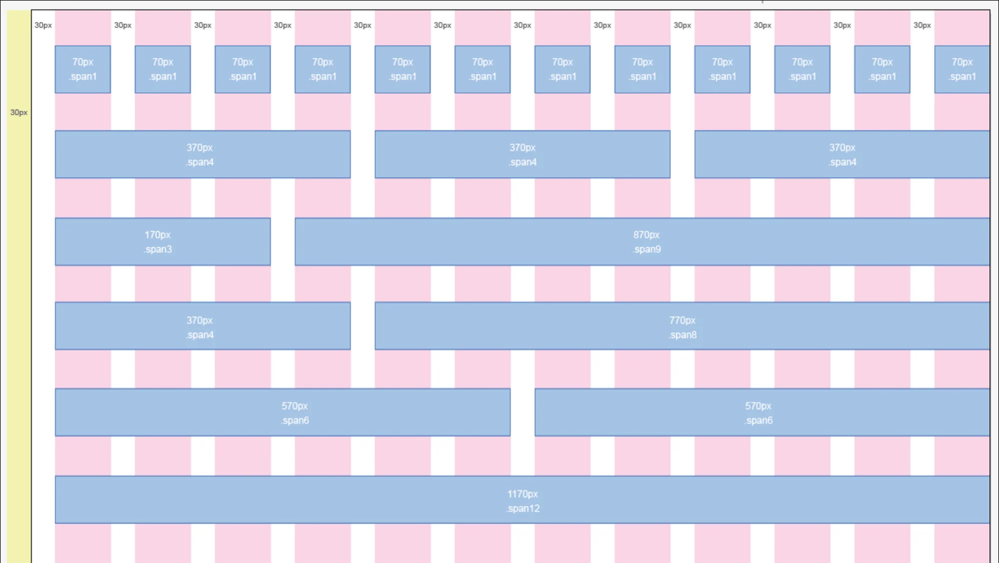

DATAflor Web Style Guide
Table of contents
- Components - WebApp building blocks
- Elements - Basic elements to create composed components
- Layout Grid - Arrange components
- Typography
- Glossary
Components - WebApp building blocks
...tbd... (work in progress: Philipp)
AppBar

An AppBar is the header of the current page. It contains information about the user and the organization he is part of. It also has a hamburger button on the top left corner.
The AppBar is a global Component. This means that it offers the same options globally and is independent of the page content.
Rules
- The AppBar has a fixed height of 64 pixel
- Has two avatar elements. one for the user and one for the organization
- Has a hamburger button on the left side
- Is attached to the top of the screen
Drawer
A Drawer is a menu which stretches over the left side of the screen. It's content depends on the page you are on. This means that you have certain options on certain pages.
Rules
- The drawer can be folded in and out via the hamburger button
- It has a DATAflor logo at the top
- Has multiple buttons which navigate to different pages (depending on the current page)
- Has a separator between option and navigation button
- Has a button at the bottom which navigates to the options
Elements - Basic elements to create composed components
...tbd... (work in progress: Philipp)
▲Layout Grid - Arrange components with consistent layout
The use of a 12-column layout is a common practice in frontend design due to its flexibility and ease of use. It provides a standard grid system that allows designers and developers to create consistent and visually appealing layouts for websites and applications. By breaking the screen into 12 equal parts, designers can easily allocate space to different components and adjust their layout accordingly. This grid system also allows for responsive design, where the layout adjusts to different screen sizes, making it an ideal choice for modern web development. Additionally, using a 12-column layout ensures that the design is easily maintainable, as changes can be made quickly and efficiently due to the predictable grid structure. Overall, the use of a 12-column layout is a practical and effective solution for creating high-quality, responsive frontend designs.
We are defining our column layout with fixed gaps between each column, but witha dynamic column width. This ensures that we fill every screen completely and makes the layout look natural and dynamic.
Rules
- Components have a minimum size of two columns
- Components rearange with changing grid layout
- Grid only contain components
- Components do not contain other components
- Components need to have an ID which defines the needed width as columns
#ContactList {
grid-column-end: span 8;
}
.Grid {
display: grid;
grid-template-columns: repeat(12, 1fr);
grid-auto-flow: column;
gap: 30px;
}
@media only screen and (max-width: 768px) and (min-width: 480px) {
.Grid {
grid-template-columns: repeat(8, 1fr);
}
}
@media only screen and (max-width: 480px) {
.Grid {
grid-template-columns: repeat(4, 1fr);
}
}
Example of a CSS-class which defines a 12-column grid
▲Typography - Readable and accessible text
Font Family
html {
font-family: "Neo Sans", sans-serif;
font-style: normal;
}
Register font-family at document root element (DOM).
Font Family of DATAflor is "Neo Sans", which is available in many browsers or at least most browsers do have a good "look-alike" installed. If this browser do not know an alternative to this font Fallback to a font without serifs. Do not force to use our font (do not import from a linked .otf/.ttf file) - for accessibility allow user to override font in browser settings.
Font Size - Baseline
html {
font-size: 100%;
}
Register font-size at document root element (DOM). Define all other text-based elements relative to this "default size". This allows your WebApp texts to respond to user needs (user defined zoom in/out).
In most browsers a baseline of 100% equals to 16px. TBD: define a value for each media-query (breakpoint)
▲Glossary
Component
A component is a collection of elements that, when combined in a tile, serve a specific purpose
Rules
- Need to be wrapped in a MUI Paper Object
- Should serve a specific Purpose
- Must consist of at least two elements

A component from a example Template
▲Element
An Element is the smallest possible object. For example a button, switch or label.
Rules
- Must be part of a component
- To be continued